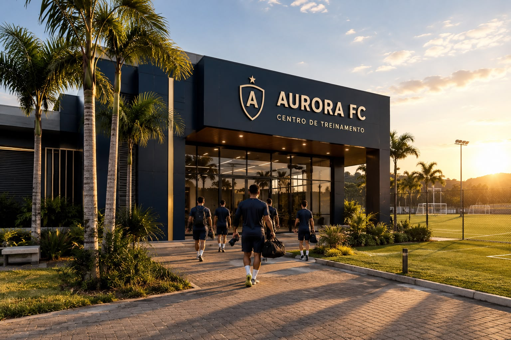
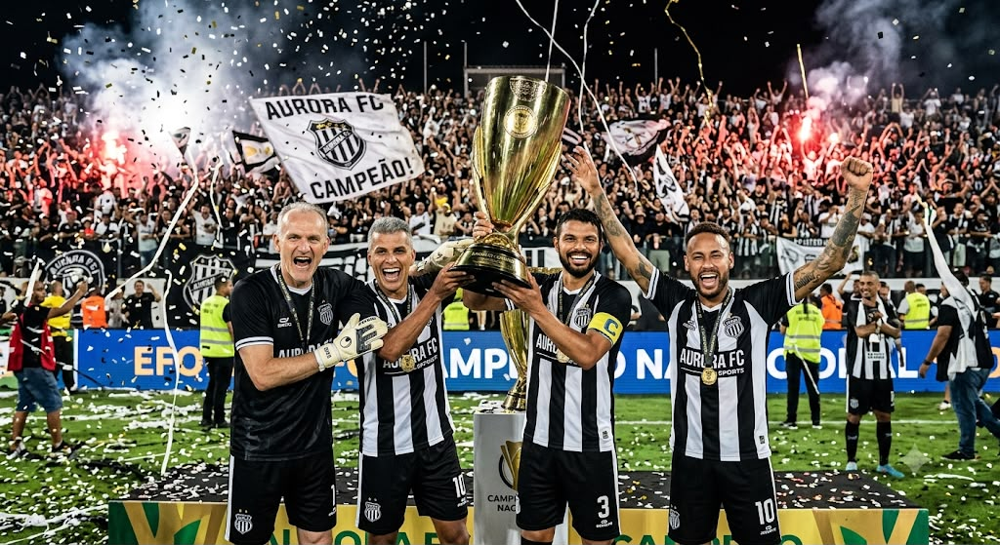

NOSSA HISTÓRIA
TRADIÇÃO, RAÍZES E FUTURO
O Aurora Futebol Clube foi fundado em 15 de março de 1998, por um grupo de amigos apaixonados por futebol. O clube nasceu com o propósito de levar o nome da cidade cada vez mais longe, dentro e fora de campo.
Ao longo dos anos, o Aurora construiu uma história de superação, trabalho e conquistas, tornando-se uma referência no futebol regional e conquistando o respeito de sua torcida e de seus adversários.
Hoje, seguimos com o mesmo espírito, honrando o passado e construindo um futuro ainda maior. Nossa história continua a cada jogo.
CONHEÇA NOSSO ELENCO →

FUNDAÇÃO
O início de um sonho.
PRIMEIRO TÍTULO
Uma conquista inesquecível.
UM NOVO CAPÍTULO
O futuro começa agora.